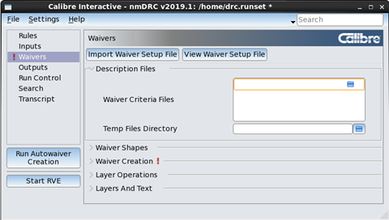

You can use Calibre
Interactive to generate a waiver shape database for the Calibre
Auto-Waivers flow. All the waiver setup parameters are controlled
through Calibre Interactive, then the waiver_flow tool is used to
create the waiver database.
All
settings on the Waivers page are saved to
the runset. If you have a runset loaded with desired settings, you
can skip to the end of the following procedure.
Tip Calibre RVE can
also be used to create a waiver database. Calibre RVE is often preferable
to using the waiver_flow tool because individual results can be
waived while you examine the result database. Only the waived results
are exported to the waiver database. See “Creating Embedded Waiver Shapes Using Calibre RVE” in the Calibre
Auto-Waivers User’s and Reference Manual for more information.
Procedure
- Click Rules on
the left panel of Calibre Interactive and specify the rule file
and run directory.
- Click Inputs on
the left panel and choose a run type of “Autowaiver Creation” in
the Run dropdown list.
The label of the run button
on the left panel changes to Run Autowaiver Creation and the
Waivers page is added to the left panel.
- Specify information for the
layout database on the Inputs page. The layout format must be GDSII
or OASIS for Calibre Auto-Waivers.
- (Optional)
Specify the name of the generated waiver setup file.
A waiver setup file is generated by Calibre Interactive
based on the GUI parameters and named _waiver_setup_ by
default. To specify a different file name, view the Preferences page,
expand the Misc section, enable the option “Specify waiver setup
file name,” and specify the file name.
- Click Waivers on
the left panel of the GUI. A view of the Waivers tab
is shown in the following figure for Calibre Interactive nmDRC.
Figure 1. Waivers Tab for Waiver
Creation
- (Optional) If you have a waiver
setup file already created and want to use it for waiver shape generation,
click the Import Waiver Setup File button
and select the file. This populates the GUI fields with the values
in the selected waiver setup file; only GUI settings specified in
the imported file are overwritten.
Use the following steps to
confirm that the imported waiver setup parameters are correct. The
waiver setup parameter that corresponds to the GUI control is given
in parentheses.
- (Optional) Provide information
in the Description Files area:
- If
you have non-default waiver criteria, specify the Waiver Criteria
File(s). Default waiver criteria is used if you do not specify a
waiver criteria file. (WAIVER_CRITERIA)
- (Optional)
Specify the directory for temporary files in the Temp Files Directory field.
The default is the working directory. (TMP_DIR)
- Expand the Waiver Shapes area
and specify the waiver shape file.
- Specify a merged or standalone
waiver database:
Merge waivers with existing design ON —
Embed waiver shapes in the layout specified on the Inputs page.
(MERGE YES)
Merge waivers with existing design OFF —
Create a waiver database that contains only waiver geometry. (MERGE
NO)
- Specify the name of the output
waiver database file in the Waiver Shapes File field. This entry
is optional—the default output waiver database filename is waived.gds. (WAIVER_DATABASE)
- (Optional) Select the setting
for “Use rule file precision”:
This setting controls how waiver
shape precision and magnification is handled if the rule file precision
differs from the layout database precision; it has no effect if
the precisions are the same. See “Waiver Cell Precision and Magnification Considerations” in the Calibre
Auto-Waivers User’s and Reference Manual for details. (PRECISION_CONVERSION)
- Expand the Waiver Creation
area and specify settings for the following options:
Waiver Cell File(s) —
Specify one or more Waiver Cell files.
See “Waiver Cells File Format” in the Calibre Auto-Waivers User’s and
Reference Manual for complete information. (WAIVER_CELLS)
To create a new waiver cells file using the GUI, enter a filename,
and supply entries in the table at the end of the Waiver Creation
area. If + and x icons are not visible for adding a removing table
rows, click Show Expanded View.
Summary File —
Specify a name for the waiver summary report file. The summary file
is always created and named waiver.summary by
default if you do not specify a filename. (WAIVER_SUMMARY)
Text Magnification —
Specify a magnification factor for texts written during waiver creation
(waiver_flow). Text magnification only applies when the output format
is GDS. The default is 0.005. (TEXT_MAG)
Magnify Text Spacing —
Magnify the spacing between text written during waiver creation;
this only applies when the output format is GDS. The magnification
level specified for the “Text Magnification” option is used; the
default of 0.005 is used if “Text Magnification” is not specified.
(MAGNIFY_TEXT_SPACING)
Place waiver cells in intermediate cells —
Place waiver cells in intermediate cells instead of the parent cell.
See the section “Intermediate Container Cells” in the Calibre Auto-Waivers User’s
and Reference Manual. (ADD_WAIVER_HIERARCHY)
- Expand the Layer Operations
area, and specify active and inactive layer operations. (NOT_IGNORE
and IGNORE)
Also see the section “SVRF Command Support” in the Calibre Auto-Waivers User’s and Reference
Manual.
- Expand the Layers and Text
area and specify layer numbers and datatypes for the waiver shapes
and text annotations, if desired.
- (Optional) Click the View
Waiver Setup File button to view the waiver setup parameters.
You can choose to save the file.
- (Optional) Choose to
save the runset.
- Click the Create
Autowaivers button on the left panel to create new waivers.
This step runs the waiver_flow tool
with the specified parameters.
Results
The following files are created:
Waiver setup file —
A waiver setup file is generated by Calibre Interactive based on the
GUI parameters and named _waiver_setup_ unless
you specified a different name in Step 4.
The RULE_FILE, WORKING_DIRECTORY,
INPUT_LIBRARY, and LAYOUT_SYSTEM parameters are taken from the GUI
settings on the Rules and Inputs pages.
Waiver shape file —
The filename is given in the Waiver Shapes area of the Waivers page,
or waived.gds by
default.
Waiver summary file —
The filename is given in the Waiver Creation area, or waiver.summary by
default.
See “Generating Waivers with the waiver_flow Tool” and “Waiver Cell Description” in the Calibre Auto-Waivers User’s and
Reference Manual for complete information.